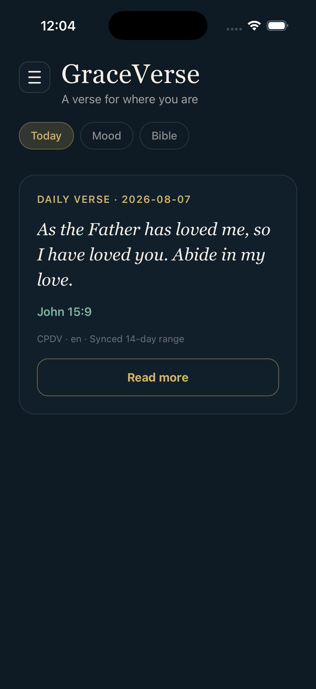
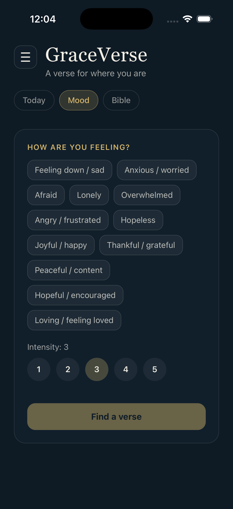
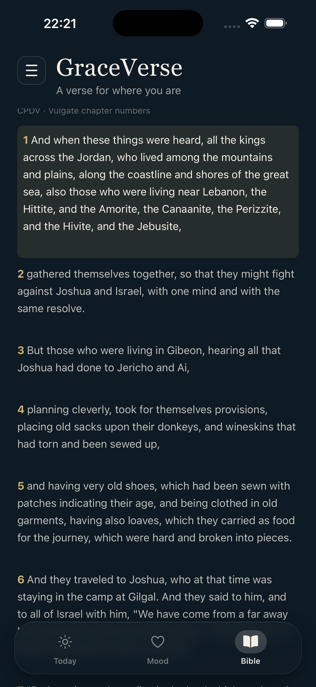
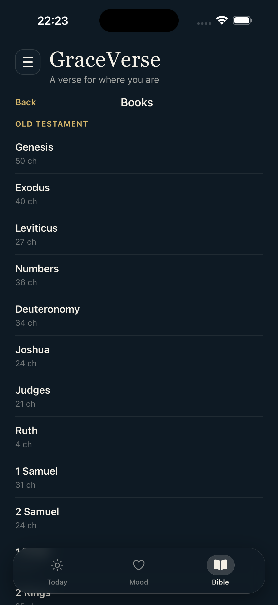

GraceVerse
A verse for where you are
A quiet companion for hard days and happy ones — daily Scripture, mood-aware matching, chapter reading, home-screen widgets, and Apple Watch. Built around the Catholic Public Domain Version (CPDV).

Scripture close at hand
Curated verses for the day and for how you feel — plus a full chapter reader when you want to go deeper.
Today
A daily verse with optional reflection, cached for offline viewing and ready for home-screen widgets.
Mood
Choose how you’re feeling and an intensity level. GraceVerse offers a fitting curated verse — for difficult days and joyful ones.

Bible reader
Browse books and chapters, jump by reference, search keywords, and keep local bookmarks and recents. Corpus stays on our API.

Browse the Bible
Browse the full Catholic canon by book and chapter, then continue reading in context.

GraceVerse on Apple Watch
Keep today’s verse on your wrist with the Apple Watch companion app and glanceable Smart Stack widgets.
Simple, prayerful, private
No sign-up. Open the app, receive the Word, read further when you want.
Open Today
See today’s verse — often available from a short local cache even when you’re offline.
Match a mood
Or browse and search Scripture in the Bible tab when you want chapter context.
Keep it close
Bookmark places locally, pin a widget, or read today’s verse from your Apple Watch.
Designed without an account
Favorites and Bible bookmarks stay on your device. Scripture content is fetched from our API over HTTPS so we can serve CPDV chapters without shipping the whole Bible inside the app binary. No ads. No ad trackers in the current version.